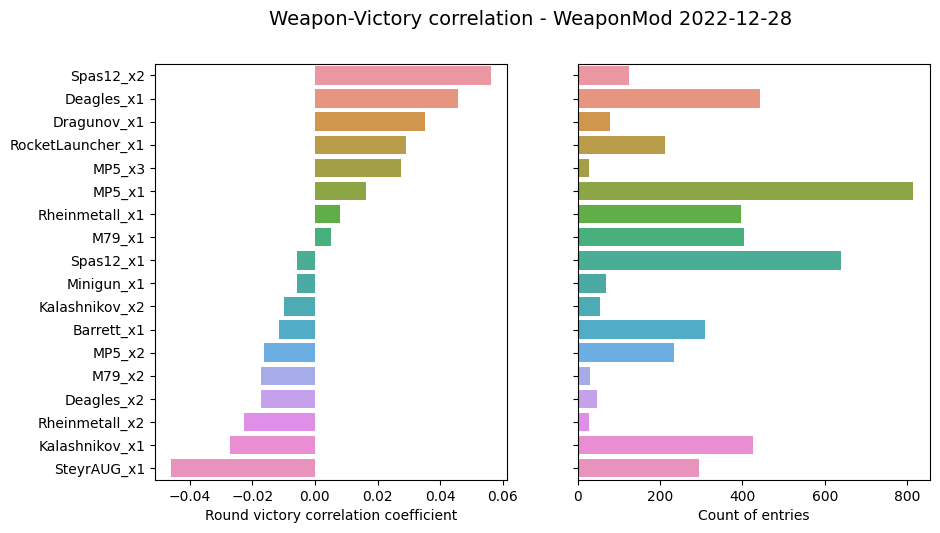

Win/weapon: WM 2022-12-28
Parameters
Start date: 2022-12-28 00:00:00
End date: 2023-03-05 00:00:00
Playlists: CTF-Standard-6
Min samples: 20
Max match imbalance: 20%
(eg worst balance: Red team win probability 40.0% and 60.0% for Blue)
Data summary
| First game | 2022-12-28 |
| Last game | 2023-03-04 |
| Games total | 446 |
| Rounds total | 1148 |
| Games in playlist `CTF-Standard-6` | 446 |
Aggregated result

WeaponMod changes
Full change set:
Summary:
- Added head, legs and torso damage modifiers.
- Increased penetration for Barrett and Rheinmetall.
- Added penetration to Deagles, Steyr, Ak, Dragunov, Barret and Rheinmetall.
- Reduced flag push for most of the weapons.
- Reduced RPG and RocketLauncher self-boost force.